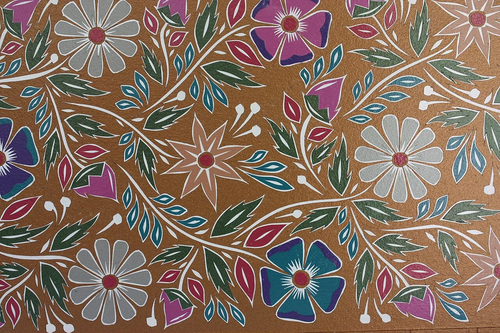

En una fotografía de 2018, Gilberto Granja trabaja sobre un objeto mientras varias personas observan. La imagen permite ver la proximidad de las manos a la pieza, pero no explica por sí sola lo que parece un barniz. El nombre sugiere un líquido vertido o extendido con brocha. Aquí, en cambio, el motivo puede nacer de una lámina de resina coloreada, estirada hasta hacerse delgada, recortada con una cuchilla y adherida a una superficie. Mirar el borde de una flor cambia la pregunta. Ya no basta con preguntar quién la dibujó. Hay que preguntar de dónde vino la materia, quién preparó el soporte, cómo se resolvió el corte y qué conocimientos quedaron fuera del encuadre. [1][3]
El barniz de Pasto recibe su nombre de una ciudad, pero su producción no cabe en ella. El Plan Especial de Salvaguardia aprobado en Colombia en 2019 distingue a los recolectores de mopa-mopa, a carpinteros, torneros y talladores, y a los maestros barnizadores. La inscripción de la UNESCO de 2020 conserva esa misma amplitud: reconoce conocimientos y técnicas tradicionales relacionados con tres actividades, desde la recolección de brotes en el Putumayo hasta el trabajo decorativo en Nariño. Un objeto terminado reúne territorios y oficios que la etiqueta comercial tiende a comprimir en una sola palabra. El problema de diseño comienza, precisamente, en esa compresión. La superficie más visible se lleva la mirada; las condiciones que la hicieron posible se vuelven difíciles de nombrar. [1][2]
Esta distinción impide tratar la pieza como una prueba de virtuosismo individual aislado. Un barnizador decide colores, ritmos, figuras y cortes. También depende de la calidad y disponibilidad de la resina y del cuerpo de madera recibido. Quien tornea una curva determina el recorrido que podrá seguir una guarda; quien talla un borde anticipa un encuentro entre volumen y película. La autoría del diseño no desaparece en una vaga idea de trabajo colectivo: se distribuye entre decisiones precisas. Si la ficha de una obra solo indica «artesanía de Pasto», faltan preguntas por las personas, las fechas, el tipo de soporte, la procedencia de la materia y las relaciones de encargo. Nombrar la técnica es un comienzo, no un crédito suficiente. [1][3]
La materia lleva un itinerario
El documento de salvaguardia sitúa las zonas históricas de recolección en el piedemonte andino amazónico y describe el tránsito de la materia hacia Pasto. Para los recolectores, reconocer el árbol, localizar sus brotes y decidir cuándo y cómo volver a un lugar requiere experiencia territorial. Un mapa de la técnica que empezara en la mesa del barnizador dibujaría mal el objeto. También borraría las condiciones de acceso a la tierra y los riesgos del desplazamiento por la selva. El plan registra problemas de tenencia, dificultades para conservar los lugares de recolección y precariedad laboral. Son datos de un diagnóstico de 2019; no autorizan a afirmar que cada taller o cada familia vive hoy de la misma manera. Sí obligan a leer la pieza más allá del brillo de su acabado. [1]
La descripción que Artesanías de Colombia hace del trabajo de Granja ofrece una secuencia comprensible sin convertir el oficio en receta: se limpia y calienta la materia para volverla trabajable, se incorporan colores y se estira hasta formar láminas delgadas. El bisturí interviene después, sobre la superficie del objeto. Un registro institucional del estirado muestra que la película no sale terminada del árbol. Su condición flexible se produce. Ese paso importa formalmente: una superficie que se puede extender, cortar y adaptar permite unir dibujo plano y volumen sin pintar el motivo directamente. La diferencia con una calcomanía industrial tampoco puede explicarse como una superioridad romántica de «lo hecho a mano». Consiste en que las variaciones de espesor, corte, presión, curva y posición participan de cada decisión. [3][4]


La palabra «decoración» suele reducir todo ese proceso a una apariencia añadida. En el objeto, sin embargo, la piel recortada altera la percepción del soporte. Puede ordenar el paso de una cara frontal a un costado, señalar una tapa o dar continuidad a un borde. En la segunda fotografía de esta lectura, una obra atribuida a Gilberto Granja muestra hojas y flores sobre un fondo ocre. No podemos deducir de una imagen el orden exacto de trabajo ni todas las capas que la forman. Sí podemos seguir cómo los contornos separan un motivo de otro y cómo el color participa en la lectura de la superficie. La observación formal tiene un límite material: el corte visible permite formular preguntas sobre la ejecución, no apropiarse del conocimiento reservado con que se preparó la resina.
El plan documenta que algunos maestros protegían especialmente la preparación de la materia. También registra un aprendizaje progresivo: antes de asumir motivos complejos, se podía «guardiar», es decir, aplicar diseños sencillos en los bordes. Esa palabra pequeña cuenta mucho sobre la estructura del oficio. El borde no era una tarea menor por estar lejos del centro; era un lugar de control y enseñanza. Seguir una cenefa alrededor de una esquina obliga a calcular continuidad, escala, cierre y relación con la forma. El resultado puede pasar inadvertido cuando funciona bien. Ese carácter discreto explica por qué la fotografía promocional suele elegir el motivo central y omitir la unión donde se reconoce la inteligencia del trabajo. [1]
El secreto técnico plantea una tensión que una revista debe tomar en serio. Documentar una práctica amenazada no equivale a publicar cada procedimiento que una comunidad protege. La pregunta no es cuánto puede extraer una cámara del taller, sino qué conocimiento necesita el lector para comprender el objeto y qué información corresponde decidir a quienes lo producen. El plan de salvaguardia combina transmisión, reconocimiento y dignidad laboral; no propone que la supervivencia del oficio dependa de abrir indiscriminadamente sus saberes a cualquiera. RUMMOR puede explicar por qué una película se corta, quiénes participan y qué exige una composición. Para describir una operación reservada o atribuir un motivo particular necesita acuerdo y verificación con sus autores. [1]
Un objeto cambia de época
La técnica no quedó fija en un repertorio de cofres reconocibles. Una investigación del Museo de América de Madrid estudia una arqueta colombiana fechada entre 1610 y 1700. Su cuerpo de madera y elementos metálicos llevan una decoración que el análisis material atribuye a resina de Elaeagia pastoensis. El estudio identificó pigmentos y colorantes en capas específicas, entre ellos un blanco de calomelano y negro relacionado con índigo calentado. Es un hallazgo sobre esa pieza, no una lista universal de materiales usados por todos los barnizadores. Su valor para la lectura del diseño está en mostrar que el color no es una abstracción en una carta: depende de sustancias, estratos, soportes y procedimientos que cambian con el tiempo. [5]
El mismo estudio recuerda que el uso de mopa-mopa existía antes de la llegada española y que, durante el período colonial, se aplicó a nuevos objetos, entre ellos arcas, atriles y marcos. Esa transformación no debe contarse como una sencilla continuidad ancestral. Cambiaron los destinatarios, las funciones, los repertorios visuales y las relaciones de poder. Una arqueta destinada a guardar papeles o bienes no ocupa el mismo lugar social que una cuenta de collar. La materia persistió mientras el objeto se reconfiguraba. Allí se ve una de las capacidades menos obvias de una técnica: admitir usos nuevos sin perder toda relación con los conocimientos que la hacen posible. También se ve el riesgo de contar la historia del ornamento sin la historia de quienes tuvieron que producirlo. [5]
El laboratorio y el taller miran la misma superficie con preguntas diferentes. El primero puede identificar una sustancia en una muestra diminuta y distinguir estratos que el ojo no separa; el segundo conoce cómo responde una materia al estirarla, aplicarla y convivir con sus cambios. Ninguno de esos conocimientos es una versión incompleta del otro. El análisis de una arqueta histórica ayuda a conservarla y a corregir atribuciones; no permite reconstruir automáticamente las decisiones de cada maestro que participó en su fabricación. A la inversa, el conocimiento actual de un taller no debe usarse para rellenar todas las lagunas de una pieza colonial. Cuando RUMMOR conecta investigación científica y oficio, necesita indicar la escala de cada prueba: una muestra, una obra, un testimonio, una práctica documentada. [5]
Ana Zabía, desde el Museo de América, explica que piezas presentes en museos europeos fueron durante mucho tiempo confundidas con lacas de otra procedencia. Una etiqueta equivocada no cambia la materia, pero sí altera qué historia puede leerse en ella. Si un objeto de Pasto se clasifica como laca mexicana, su cadena territorial desaparece de la consulta, de la investigación y de la comparación visual. Corregir la atribución no es un detalle para especialistas: devuelve al objeto una posibilidad de relación con talleres y archivos que antes quedaban separados. El caso enseña que la catalogación también diseña una superficie, la del conocimiento disponible para el público. La ficha, como el pie de foto, puede abrir una historia o clausurarla. [6]
La investigación histórica no obliga a pedirles a los talleres contemporáneos que reproduzcan los motivos de una arqueta del siglo XVII. En un trabajo publicado por Artesanías de Colombia, Gilberto Granja cuenta que ver un bargueño antiguo despertó su interés por trabajar esa forma con un ebanista. En el mismo registro, Óscar Granja describe cambios de color y motivos inspirados en las hojas de la propia planta. Son declaraciones situadas de una familia y un taller, no un modelo obligatorio para todo el oficio. Su interés es mostrar cómo una pieza antigua puede convertirse en referencia productiva sin dictar una copia exacta. La relación entre herencia e innovación ocurre en elecciones de forma, colaboración, escala, paleta y enseñanza; no en una oposición abstracta entre tradición y modernidad. [7]
El bargueño resulta especialmente útil para observar la relación entre estructura y superficie. Su cuerpo ofrece tapa, cajones, marco, esquinas y frentes pequeños. Cada plano permite una intensidad distinta de composición; cada encuentro obliga a decidir dónde continúa o se interrumpe una figura. La madera no es un lienzo neutro. Un taller de torno, uno de ebanistería y uno de talla pueden producir soportes con problemas formales diferentes, según relata el perfil de Granja publicado por Artesanías de Colombia. La decisión de aplicar barniz a uno u otro transforma la lectura del mueble y también la distribución de trabajo. Investigar una pieza determinada requeriría identificar quién hizo cada parte. Sin esa ficha concreta, esta lectura solo puede describir posibilidades del sistema, no repartir autorías que no conocemos. [3]


Los cambios que Óscar Granja menciona tienen una consecuencia editorial interesante: para ver una innovación hace falta una comparación justa. Dos objetos fotografiados con iluminación, distancia y encuadre dispares pueden parecer radicalmente distintos aunque cambie poco su construcción; dos piezas formalmente próximas pueden esconder una transformación importante en el soporte o en la forma de enseñar. Una serie visual debería identificar taller, año, material, dimensión, autoría y destino de cada objeto antes de sugerir una línea evolutiva. Tampoco hay que llamar «tradicional» a uno y «contemporáneo» al otro como si el primero no hubiera sido una decisión nueva en su propio momento. El contraste sirve cuando hace visibles operaciones de diseño; falla cuando asigna valor de antemano. [7]
Un proyecto universitario reciente examinó un escritorio colonial decorado con mopa-mopa y lo trató como artefacto complejo, capaz de informar sobre su construcción, uso y circulación. Entre sus resultados figura una experimentación contemporánea que trasladó motivos del mueble a accesorios de plata. Importa menos presentar ese traslado como «revitalización» automática que preguntar qué conservó y qué modificó: la figura pasa de una superficie bidimensional en un mueble a una forma y un acabado en metal; la adhesión de la resina exige resolver otro soporte; el objeto cambia de escala y de relación con el cuerpo. La investigación permite observar el diseño como traducción material. No demuestra por sí sola que la nueva línea sea viable para un taller, que la comunidad la haya adoptado o que resuelva los problemas identificados en el plan de salvaguardia. [8]
Esta cautela importa cuando el lenguaje de la innovación llega al patrimonio. Una nueva gama de color, un soporte diferente o una colaboración con diseñadores pueden abrir mercados. También pueden concentrar el prestigio en la firma visible mientras dejan sin crédito al recolector y al carpintero. Ni la conservación exige inmovilidad ni la novedad garantiza justicia. La pregunta útil es más concreta: quién decide el producto, quién conoce el destino de la materia, quién recibe el ingreso, quién puede rechazar una adaptación y quién aparece nombrado cuando la obra circula. Sin contratos, testimonios y datos de una colaboración específica, esas preguntas no tienen una respuesta general honesta. El artículo debe mantenerlas abiertas en vez de resolverlas con una fotografía seductora.
Lo que una pieza terminada no cuenta
El reconocimiento de la UNESCO en 2020 inscribió la práctica en la Lista de Patrimonio Cultural Inmaterial que requiere medidas urgentes de salvaguardia. En su ficha, la organización enumeró, para ese momento, un número reducido de recolectores, carpinteros y barnizadores expertos, además de presiones sobre materiales, acceso a zonas de recolección y condiciones de trabajo. No conviene repetir esas cifras como censo de 2026. Una inscripción internacional no congela el presente, y un texto editorial no puede medir sus efectos sin investigar qué acciones del plan se realizaron y cómo las evaluaron sus participantes. La designación sí vuelve pública una pregunta precisa: ¿qué debe sostenerse para que la técnica pueda seguir siendo una forma de vida y no solo una demostración ocasional? [2]
El plan colombiano propone atender condiciones laborales, transmisión y organización, además de promover la difusión. Menciona seguridad industrial, riesgos del trabajo y la posibilidad de cotizar para una pensión. Estos asuntos rara vez entran en la imagen de un objeto patrimonial: ni el certificado ni la vitrina revelan si la persona que lo hizo puede seguir trabajando sin comprometer su salud. Son parte del diseño en un sentido material. Una práctica depende de herramientas, temperatura, espacio, tiempos de aprendizaje, precio de insumos y estabilidad del taller. Si esas condiciones fallan, conservar una muestra en un museo no garantiza que el conocimiento continúe en la vida cotidiana. [1]
La organización colectiva tampoco admite una solución simple. El diagnóstico de 2019 registra conflictos y desconfianza heredados de experiencias asociativas anteriores, además de desigualdades entre talleres con distinto reconocimiento. Pensar que basta con crear una marca común o una feria para resolver esa historia sería confundir visibilidad con confianza. El mismo documento plantea espacios de participación, comercialización directa y estrategias concertadas entre los tres eslabones. La palabra decisiva es concertadas: una imagen pública del oficio puede ser eficaz para atraer visitantes y, al mismo tiempo, reproducir una jerarquía si solo muestra al último trabajador de la cadena. Documentar la procedencia completa del objeto es una práctica editorial concreta para no repetir esa reducción. [1]
La fotografía inicial de Granja es valiosa precisamente porque muestra trabajo y no únicamente producto. Tiene, sin embargo, un encuadre inevitable: vemos el taller de un maestro identificado, no a los recolectores del Putumayo ni a quienes construyeron el soporte de madera. La segunda imagen se acerca al resultado formal, pero tampoco puede revelar por sí sola el tiempo de preparación o el reparto del ingreso. Una secuencia visual más completa exigiría permisos, fechas y nombres en cada lugar: árbol y recolección, soporte, lámina, corte, uso y reparación eventual. No se trata de hacer un catálogo exhaustivo por obligación. Se trata de que la imagen elegida responda a la pregunta que el texto formula y no la sustituya con una impresión de exotismo.
Hay una decisión de publicación igualmente material: el pie de foto. Una imagen de manos trabajando puede circular miles de veces sin el nombre de la persona retratada, y una fotografía de un cofre puede sobrevivir a la pérdida de la ficha de su fabricante. RUMMOR debe mantener juntos archivo visual, procedencia, licencia y límites de interpretación. El visitante puede ver una unión y preguntarse cómo se hizo; el pie no debería fingir que esa fotografía demuestra la respuesta. Si más tarde aparece el crédito del carpintero o se corrige una atribución, el artículo debe poder actualizarse sin borrar la historia de la corrección. Un archivo responsable no es una vitrina de certezas inmóviles: permite saber qué se conocía y cuándo se añadió lo que faltaba.
Tampoco hay un único modo correcto de usar hoy un objeto con barniz de Pasto. Una pieza puede circular en un museo, venderse en una feria, permanecer en una casa, convertirse en regalo o inspirar otra investigación. Su significado cambia con esos usos. El reto para una revista de diseño consiste en no detener el análisis al llegar a la categoría «artesanía»; esa palabra puede nombrar una práctica, pero también funcionar como un atajo que evita examinar el objeto. ¿Cómo se abre una tapa? ¿Qué zona recibe el roce de la mano? ¿Qué motivo acompaña la unión de dos planos? ¿Se conoce quién lo encargó y para quién se hizo? Las respuestas requieren una pieza identificada, no una teoría general sobre el sur de Colombia.
La resina recortada nos obliga a mirar despacio porque contradice la primera impresión. Una superficie que parece pintada reúne decisiones de extracción, transformación, soporte, corte y circulación. Su belleza no queda anulada al conocer esas condiciones; adquiere mayor precisión. El futuro del oficio tampoco puede deducirse del prestigio de una inscripción ni de una nueva aplicación comercial. Dependerá de personas y acuerdos cuya situación debe documentarse en presente. Por ahora, el gesto editorial más responsable es modesto y exigente: nombrar a quienes conocemos, señalar lo que falta, distinguir una pieza de otra y permitir que el borde de una flor nos conduzca hasta el territorio y el trabajo que la hicieron posible.
Fuentes.
- Ministerio de Cultura de Colombia, Resolución 633 de 2019 y Plan Especial de Salvaguardia. Diagnóstico participativo, cadena de oficios y propuestas formuladas en 2019.
- UNESCO, ficha del Barniz de Pasto Mopa-Mopa. Inscripción de 2020 y situación descrita entonces.
- Artesanías de Colombia, «El maestro del barniz». Perfil de Gilberto Granja y descripción del trabajo del taller.
- Artesanías de Colombia, «Barniz de Pasto, un proceso inspirador». Registro del estirado de la resina.
- Andrés Sánchez Ledesma, análisis material de una arqueta del Museo de América, *Anales del Museo de América*, 2020.
- Ana Zabía, «El arte del barniz de Pasto en la colección del Museo de América», *Anales del Museo de América*, 2020.
- Artesanías de Colombia, «Maestros artesanos del Barniz de Pasto. Segunda parte». Voces atribuidas a Gilberto y Óscar Granja.
- Proyecto «Aproximación Histórica a una Pieza Colonial con Mopa-Mopa: legados y pervivencias», memorias de investigación-creación, 2023.
Lectura documental y de imágenes acreditadas. Sin visita al taller, entrevistas propias ni evaluación de resultados del plan de salvaguardia. Las dos fotografías no documentan toda la cadena territorial.
Fuentes consultadas el 19.11.2026. Análisis e interpretación: RUMMOR. Edición privada para revisión.